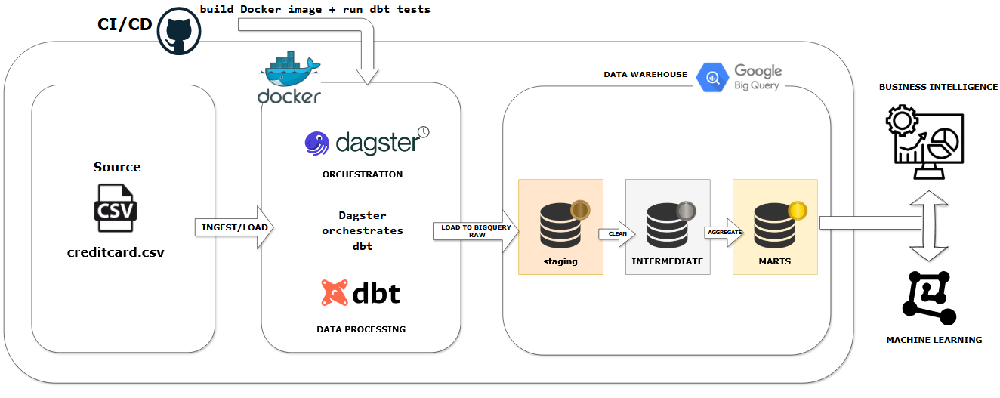
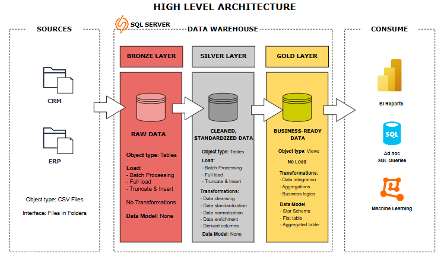

Cyril Fernando
💼 Data Engineering Portfolio
Designing scalable, cloud-native data pipelines that power decision-making.
About Me
A recent Electrical Engineering graduate with a strong foundation in analytical thinking and problem-solving, I'm passionate about transitioning into Data Engineering. I'm proficient in SQL and Python, with hands-on experience in building data pipelines and developing dashboards. I'm a quick learner, driven to transform raw data into actionable insights and continuously expand my skill set in a dynamic professional environment.
Projects
Credit Card Transaction Data Pipeline
Scenario: Fraud analysts needed clean, well-modeled credit card transaction data instead of a single raw CSV export, so they could build dashboards and experiment with fraud signals.
Solution: Designed a Dockerised batch pipeline where Dagster orchestrates dbt transformations on BigQuery. Raw Kaggle transactions are ingested into staging tables, refined into intermediate models, and published as marts optimised for fraud analytics.
Impact: Processed 284K+ transactions through an automated medallion pipeline with 100% test pass rate across 15 dbt tests, reducing deployment time by 83% via CI/CD and enabling repeatable fraud analytics on consistent, documented marts.
Stack: Python · dbt · Dagster · BigQuery · Docker · GitHub Actions
Tested On: Local Docker + GCP BigQuery (dev dataset)
View on GitHubSQL Data Warehouse Project
Scenario: Addressing the challenge of disparate raw data sources to enable efficient analytics and insights.
Solution: Implemented a medallion pipeline in SQL Server, transforming raw CSVs into analytics-ready tables with a star schema. Developed reusable ETL scripts for automated data transformation.
Impact: Improved data quality and consistency through cleansing, normalization, and standardization. Enhanced SQL Server performance by adding indexes, optimizing queries, and improving the data loading process.
Stack: SQL Server
Tested On: Local SQL Server
View on GitHubCafe Sales Analysis Dashboard
Scenario: Cafe struggled with unorganized sales records, hindering effective decision-making on product and marketing.
Solution: Cleaned 10,000 rows of MySQL sales data, standardizing records and building calculated fields for insights. Delivered an interactive Power BI dashboard with KPIs and filters.
Impact: Key trends discovered: sales peak Thursday–Monday, seasonal spikes in March/October, and coffee as the top bulk seller. Improved decision-making.
Stack: MySQL · Power BI
Tested On: Local MySQL + Power BI Desktop
View on GitHubAutomated Drip Irrigation System
Scenario: Vineyards faced significant water waste and high labor costs with traditional irrigation, requiring an automated, off-grid solution.
Solution: Designed and built an off-grid drip irrigation system. Programmed an ESP32 to monitor soil moisture and trigger pump activation, integrating a solar panel and battery for autonomous operation.
Impact: Achieved a significant 46.42% reduction in water usage during a six-week field test, while maintaining equal grape yield. This led to substantial cost savings in water resources and labor, demonstrating the potential for sustainable agricultural practices.
Stack: ESP32
Tested On: Field Test